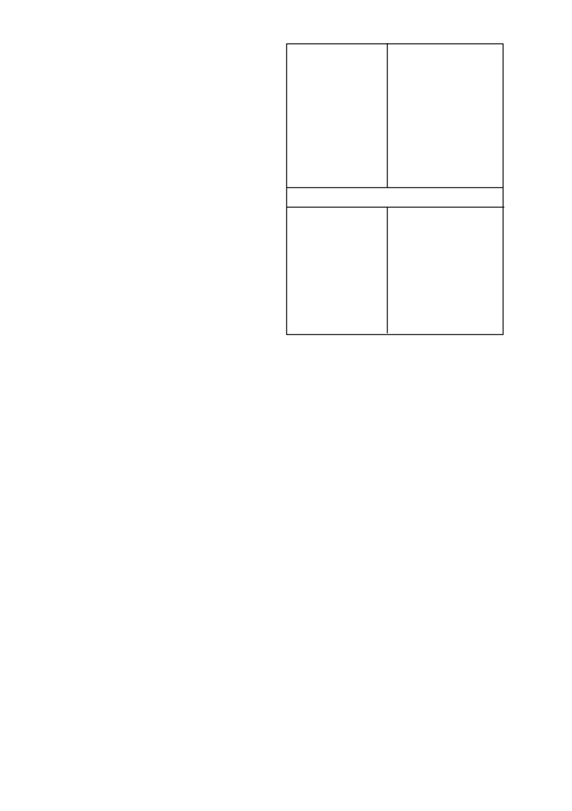

Brachiaria eruciformis
litjiesinjaalgras
Chloris virgata
witpluim-Chloris
Dactyloctenium aegyptium
hoenderspoor
Digitaria sanguinalis
kruisvingergras
Echinochloa crusgalli
hanepootmanna
Eleusine indica
jongosgras
Panicum maximum
gewone buffelsgras
Panicum schinzii
soetbuffelsgras
Pseudobrachiaria deflexa
bastersinjaalgras
Setaria pallide-fusca
rooiborselgras
Setaria verticillata
klitsborselgras
Tragus berteronianus
kleinwortelsaadgras
Tragus racemosus
grootwortelsaadgras
Urochloa mosambicensis
bosveldbeesgras
Urochloa panicoides
beesgras
Onkruide wat wisselvallig beheer word
Amaranthus hybridus
gewone misbredie
Amaranthus spinosus
doringmisbredie
Amaranthus thunbergii
rooimisbredie
Chenopodium carinatum
groenhondebossie
Cleome monophylla
rusperbossie
Commelina benghalensis
Bengaalse wandelende
Jood
Cyperus esculentus
geeluintjie
Datura ferox
grootstinkblaar
Datura stramonium
stinkblaar
Galinsoga parviflora
knopkruid
Nicandra physaloides
basterappelliefie
Portulaca oleracea
porslein
Belangrik
Geeluintjie
(Cyperus esculentus)
Die beheer van
C. esculentus
kan verbeter word deur aan
die volgende voorwaardes te voldoen:
•
Die plantproses onmiddellik voorafgegaan word deur ‘n deeg-
like ploegbewerking met ‘n skaarploeg.
•
‘n Relatiewe fyn, egalige en ferm saadbed voorberei word.
•
Die onkruiddodertoediening gevolg word deur minstens 10
- 20 mm sagte deurdringende reën (of besproeiing) om die
onkruiddoder in die grond in te loog voordat
C. esculentus
opkom (gewoonlik 7 - 10 dae na deeglike grondbewerking).
Die kans vir hierdie toestande om voor te kom, is groter tydens
die laaste helfte van die plantseisoen (November). Namate
die grond swaarder word, is meer reën of besproeiing nodig
om goeie resultate te verkry.
Om hierdie rede is beheer soms
swak op turfgronde.
•
Reënval na onkruiddoder toediening maar voor
C. esculentus
opkoms is noodsaaklik vir optimale
C. esculentus
beheer.
Gevolglik moet
METAGAN GOLD
tydens of onmiddellik na
die plantproses in klam grond toegedien word.
•
Wanneer in droë grond geplant word (onvoldoende vog
om
C. esculentus
te laat ontkiem), moet die toediening van
METAGAN GOLD
uitgestel word tot so na as moontlik aan,
maar beslis voor die eerste reën.
Grasbeheer
•
Grasdoders wat aan die chloorasetamied onkruiddodergroep
behoort (wat
METAGAN GOLD
insluit) word via die koleop-
tiel van grasonkruide opgeneem.
Vir goeie grasbeheer moet
hierdie onkruiddoders dus teen letale konsentrasies beskik-
baar wees in die boonste ± 50 mm van die grondprofiel. Die
adsorpsiekapasiteit van ‘n grond vir hierdie onkruiddoders,
sowel as die hoeveelheid water wat deur die grondprofiel
beweeg met reën / besproeiing, bepaal die gevolglike kon-
sentrasie van die onkruiddoders in die boonste lae van die
grondprofiel.
As gevolg van die lae adsorpsiekapasiteit van
sandgronde (0 - 15% klei, < 1 % organiese materiaalinhoud)
kan bogenoemde onkruiddoders tot sub-letale vlakke in die
boonste ± 50 mm verlaag word na die voorkoms van deurdrin-
gende reën (25 mm en meer per dag). Aanhoudende reën (50
mm en meer versprei oor 3 - 7 dae) sal dieselfde gevolg hê.
Dit kan dus gebeur dat grasse ontkiem as sulke toestande
voorkom. Splittoedienings word aanbeveel indien
METAGAN
GOLD
op sulke gronde gebruik word. Deurdringende en/of
METAGAN GOLD
/ 2
METAGAN GOLD mag sekere gewasse onder die volgende
omstandighede beskadig:
•
Ingeteelde ouerplante van mieliebasters.
Raadpleeg in hierdie
verband eers ‘n verteenwoordiger van Syngenta, die versprei-
der of saadverskaffer.
•
Tabak en voersorghum wat op baie sanderige en/of gruise rige
grond geplant word, of waar vloedbesproeiing gebruik word.
•
Graansorghum en voersorghum op gronde met ‘n hoë fyn-
sandinhoud (60 % of meer) en/of swak struktuur wat geneig is
om toe te slaan en te verdig na reën en gevolglik swak deurlug
is of graansorghum en voersorghum wat dieper as 50 mm
geplant is.
•
Graansorghum, voersorghum en droëbone op landerye met
‘n hoë voorkoms van grondgedraagde siektes en/of waar
monokultuur toegepas word.
•
Droëbone onder warm droë toestande veral wanneer ‘n ver-
digte laag in die grond voorkom.
Hierdie toestande kan ook
aanleiding gee tot ‘n verhoogde sensitiwiteit vir windskade by
bone.
•
Sonneblomme en droëbone onder versuiptoestande op vlak,
sanderige gronde, <100 cm diep, met ‘n ondeurdringbare klei-
ondergrond.
METAGAN GOLD
kan net op voersorghum gebruik word wat
sorghum x sorghum kruisings en sorghum x sudan gras kruisings
is. Kruisings met
Pennisetum
spp en kruisings wat die BMR gene
bevat mag nie met
METAGAN GOLD
gespuit word nie.
CONCEP
®
960 EC saadbehandeling word slegs aanbeveel vir die
gebruik saam met
METAGAN GOLD
of DUAL GOLD
.
Belangrik
Indien ander onkruiddoders in kombinasie met
METAGAN GOLD
gebruik word, moet die gebruiksbeperkings van hierdie onkruid-
doders, soos op die betrokke etikette aangedui, nagekom word.
Waarskuwing: Moontlike beskadiging van triasien sensi-
tiewe gewasse
•
Waar gronde met kalk behandel is om die pH te verhoog mag
die moontlikheid van gewas beskadiging dramaties verhoog
in gronde waar triasienes voorheen toegedien is. Dit gebeur
as gevolg van die triasien molekule wat op die klei kompleks
vervang word met kalsium katione en die triasien dus meer
beskikbaar word in die grondwater kompleks.
•
Geen triasien sensitiewe gewasse moet na kalk toedienings
geplant word nie. Dit is selfs van toepassing indien triasiene
teen wisselbou dosisse gespuit is in vorige jare. Slegs mielies
moet geplant word direk na kalk toedienings.
•
Triasien sensitiewe gewasse sluit in alle breëblaargewasse
soos die boon gewasse en sonneblomme asook alle klein-
graangewasse soos koring.
•
Hierdie waarskuwing waarborg egter nie dat geen skade aan
selfs mielies in die daaropvolgende aanplanting sal voorkom
nie aangesien groot volumes triasiene beskikbaar mag raak
afhangende van die volume kalk wat toegedien word en die
reënval wat kan voorkom.
Waarskuwing: Moontlike
verhoogde effektiwiteit, fitotok-
sisiteit en verlengde nawerking
•
‘n Verhoging in die grond pH na vlakke bokant 7 skep toe-
stande waar verhoogde effektiwiteit en gepaardgaande verla-
ging in selektiwiteit kan voorkom. Hierdie verhoogde pH vlakke
kan ook verlengde grondnawerking tot gevolg hê wat veral
onder besproeiing die opvolg gewaskeuse mag beïnvloed.
•
Waar grond pH verstellings gedoen is, moet gelet word op die
gebruik van sulfoniel ureum onkruiddoders, triazolopiri midien
sulfonanilied onkruiddoders en imidasolinoon on kruid doders
wat almal baie sensitief is vir grond pH fluk tuasies.
Kontak u plaaslike SYNGENTA verteenwoordiger voordat
op enige bekalkings program besluit word om gewas
keuses en gewas beskermingsprogramme te bespreek.
5. ONKRUIDE WAT BEHEER WORD
Die volgende onkruidsoorte word normaalweg beheer deur die
vooropkomtoediening van
METAGAN GOLD
teen die toedie-
ningshoeveelhede soos hieronder aangedui:
